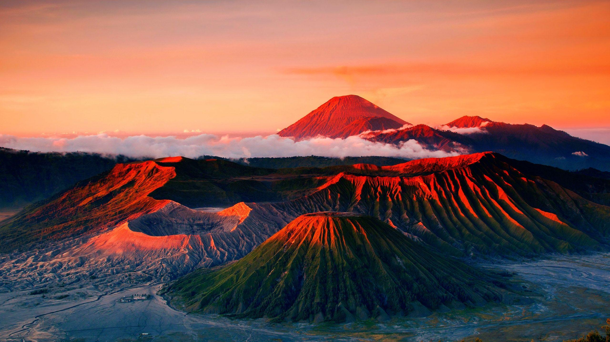

Taman Nasional Bromo
Dunia Pasir dan Api
Sebagai daerah vulkanik terbesar di provinsi Jawa Timur, Taman Nasional Bromo Tengger Semeru memiliki wilayah seluas 800 km persegi. Destinasi pariwisata yang satu ini jangan sampai terlewatkan, terutama untuk Sobat Pesona yang tertarik pada aktivitas vulkanik. Sobat Pesona dapat menyaksikan asap dan abu yang berasal dari Gunung Semeru, sebuah gunung berapi yang masih aktif dengan ketinggian 3.676 meter di atas permukaan laut.
Taman Nasional Bromo Tengger Semeru merupakan satu-satunya kawasan konservasi di Indonesia yang memiliki lautan pasir seluas 10 km yang disebut Tengger, tempat dimana empat anak gunung berapi baru berada. Anak gunung berapi tersebut adalah Gunung Batok (2.470 m), Gunung Kursi (2.581 m), Gunung Watangan (2.661 m), dan Gunung Widodaren (2.650 m). Namun, dari deretan gunung tersebut, hanya Gunung Bromo lah satu-satunya yang masih aktif. Temperatur di puncak Gunung Bromo berkisar 5-18 derajat Celcius. Bila Sobat Pesona menuju ke arah Selatan Taman, Sobat akan menemukan dataran terjal yang terbelah oleh lembah dan dihiasi dengan danau-danau yang indah hingga mencapai kaki Gunung Semeru.